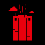
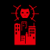
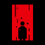
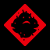
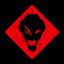
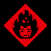
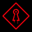
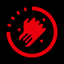

แนวทางเก็บถ้วย Control Resonance
- ระดับความยากในการเก็บถ้วย: 8/10
- เวลาในการเล่น: ประมาณ 50 ชั่วโมง
- ถ้วยที่อาจพลาดได้: มี (Be What You Want to Be) แต่ก็ยังสามารถแก้ไขได้
- ระดับความยากมีผลกับถ้วยไหม?: ไม่มี
- จำนวนรอบการเล่นขั้นต่ำ: 1 รอบ
- ถ้วยรางวัลทั้งหมด: 50 ถ้วย
คำแนะนำ
เหนื่อยมากกกก ยอมรับว่าเป็นสายสปอยก่อนเล่นเพราะจะได้ไม่เสียเวลามาเก็บถ้วยในภายหลัง พอมาเห็นว่ามีถ้วยที่อาจพลาดได้ก็เลยใจจดใจจ่อกับถ้วยนี้เป็นพิเศษ พอเอาเข้าจริงมัวแต่ระวังถ้วยนั้นกลายเป็นขนมไปเลยเมื่อเจอพัชเซิลที่แสนจะปวดหัว
เริ่มต้นแรกจะเห็นได้ว่ามีเควสเยอะแยะน่าปวดหัวถึง 3 เส้นทาง 1.เนื้อเรื่องของ Dylan 2.ตามหา Jesse 3.เอาชนะบอส Resonant แต่ไม่เป็นไรนะเล่นไปตามเนื้อเรื่องของ Dylan ก่อน พอไปถึงพื้นที่ไหนแล้วอีก 2 เควสที่เหลือถ้ามีการแจ้งเตือนก็ให้เริ่มทำได้เลย
แต่มีข้อแม้ว่าถ้าไปถึงพื้นที่ West Incursion Zone แล้ว ให้รีบไปที่ซ้ายล่างของพื้นที่จะเริ่มได้ยินเสียงเพลงพร้อมข้อความเด้งว่า “Singing reported?” ให้ขึ้นไปด้านบนของตึกสีน้ำตาล เมื่อเข้าไปจะเข้าสู่เควส “The Party Won’t Stop” ที่บังคับให้ Dylan ร้องเพลงให้ถูกไม่งั้นจะมีคนเสียชีวิต แนะนำให้เลือกตามนี้
- gasoline (ขวา)
- stress (ซ้าย)
- so fleeting (ขวา)
- too long (บน)
- move (ซ้าย)
- fear (ล่าง)
- everything (ขวา)
- higher and higher (บน)
- Shout (ขวา)
จากนั้นก็เล่นตามเควสหลักไปตามปกติและพยายามเก็บเควสรองให้ได้มากที่สุดเท่าที่จะทำได้ก่อนจะจบเกม รวมถึงไอคอนหรืออีเว้นท์ต่างๆ ในพื้นที่ก็ด้วย สำรวจทุกซอกทุกซอยเพื่อเก็บทรัพยากรมาอัปเกรดสกิลและอาวุธให้กับ Dylan
รายการถ้วยรางวัล
เก็บถ้วยอื่นๆ จนครบ (Platinum)
เก็บถ้วยอื่นจนครบก็จะได้รับถ้วย Platinum
เอาชนะบอส Resonant ครบทั้งหมด 6 ตัว
ในแต่ละพื้นที่จะมีบอสประจำพื้นที่ จำเป็นต้องหาทางไปเอาชนะมัน:
a) The Artist ในพื้นที่ The Downtown
b) The Deserter ในพื้นที่ The Central
c) The Dancer ในพื้นที่ The West Incursion Zone
d) The Collective ในพื้นที่ The Park
e) The Physicist ในพื้นที่ The Underpass
f) The Co-Director ในพื้นที่ The Unknown
เอาชนะ Hedron
ปลดล็อคตามเนื้อเรื่องหลังจากจบเควส Fight the Core
ตัดการเชื่อมต่อ Hedron ทั้งหมด
ปลดล็อคตามเนื้อเรื่องหลังจากจบเควส Sever the Hedron Links

ตัดการเชื่อมต่อ Hedron เป็นครั้งแรก
ปลดล็อคตามเนื้อเรื่องหลังจากจบเควส The Hedron Link
ทำภารกิจ Fault ให้สำเร็จ
ปลดล็อคตามเนื้อเรื่องหลังจากจบเควส The House in Distress

ช่วยเหลือ CFD
ปลดล็อคตามเนื้อเรื่องหลังจากจบเควส Enemy of My Enemy

รายงานเรื่อง CFD
ปลดล็อคตามเนื้อเรื่องหลังจากจบเควส Enemy of My Enemy
ช่วยเหลือ Arish
ปลดล็อคตามเนื้อเรื่องหลังจากจบเควส Evacuation Procedures
เอาชนะบอส Resonant ในพื้นที่ The Unknown
หนึ่งในเควสหลักที่ต้องทำภายในเกมคือการเอาชนะบอส Resonant ที่มีทั้งหมด 6 ตัว และหนึ่งในนั้นคือ The Co-Director อยู่ทางทิศตะวันออกของพื้นที่ The Unknown

เอาชนะบอส Resonant ในพื้นที่ The Underpass
หนึ่งในเควสหลักที่ต้องทำภายในเกมคือการเอาชนะบอส Resonant ที่มีทั้งหมด 6 ตัว และหนึ่งในนั้นคือ The Physicist อยู่ใต้ดินของพื้นที่ The Underpass สามารถเจอได้ระหว่างทำเควส Recursions and Iterations

เอาชนะบอส Resonant ในพื้นที่ The Park
หนึ่งในเควสหลักที่ต้องทำภายในเกมคือการเอาชนะบอส Resonant ที่มีทั้งหมด 6 ตัว และหนึ่งในนั้นคือ The Collective อยู่ใจกลางของพื้นที่ The Park ใกล้กับ Valley Station
เอาชนะบอส Resonant ในพื้นที่ The Central
หนึ่งในเควสหลักที่ต้องทำภายในเกมคือการเอาชนะบอส Resonant ที่มีทั้งหมด 6 ตัว และหนึ่งในนั้นคือ The Deserter อยู่ชั้นใต้ดินของ Patterned Factory ใจกลางพื้นที่ The Central

เอาชนะบอส Resonant ในพื้นที่ The West Incursion Zone
หนึ่งในเควสหลักที่ต้องทำภายในเกมคือการเอาชนะบอส Resonant ที่มีทั้งหมด 6 ตัว และหนึ่งในนั้นคือ The Dancer ต้องเจออยู่แล้วเพราะเป็นบอสประจำเควส The West Coast Incursion Zone Resonant
เอาชนะบอส Resonant ในพื้นที่ The Downtown
หนึ่งในเควสหลักที่ต้องทำภายในเกมคือการเอาชนะบอส Resonant ที่มีทั้งหมด 6 ตัว และหนึ่งในนั้นคือ The Artist ต้องเจออยู่แล้วเพราะเป็นบอสประจำเควส Orientation
อัปเกรด Aberrant จนถึงเลเวล 100
จริงๆ แล้วมันเรียกว่า Aberrant Strength แต่เพื่อให้เข้าใจง่ายจึงขอเรียกว่าอัปเลเวล เพียงแค่อัปอาวุธหลัก อาวุธรอง และ Combo Finisher ที่ใช้บ่อยก็แทบจะเต็ม 100 แล้ว
ปลดล็อค Talent 30 อย่าง
แต้ม Talent จะได้รับจากการเพิ่มเลเวลพื้นที่ต่างๆ ที่มีทั้งหมด 7 สถานที่ในเกม
อัปเกรดพลังชีวิต 4 ครั้ง
ต้องค้นหากล่องสมบัติที่เป็นรูปตัวตลก 12 จุด (ทุกๆ 3 กล่องจะอัปเกรด 1 ครั้ง) แต่ไม่ต้องกังวลมากไป ภายในเกมมีมากกว่านั้น
อัปเกรดเลเวลพื้นที่โดยรวมในเกมให้ถึง 40
แต่ละโซนจะมีเลเวลสูงสุดดังนี้:
a) The Downtown: 15
b) The Central: 15
c) The Evacuation Zone: 10
d) The West Incursion Zone: 10
e) The Park: 10
f) The Underpass: 10
g) The Unknown: 15
อัปเกรด Power 4 ครั้ง
ต้องค้นหากล่องสมบัติที่เป็นกล่องเหล็กด้านบนมีไฟคล้ายไซเรน 12 จุด (ทุกๆ 3 กล่องจะอัปเกรด 1 ครั้ง) แต่ไม่ต้องกังวลมากไป ภายในเกมมีมากกว่านั้น
ใส่สกิล Combat Ability ครบทุก 6 ช่อง
แต่การจะปลดล็อคช่องที่ 6 ได้จะต้องเคลียร์เควสรอง Pope’s Research ให้เรียบร้อยก่อน
คราฟเครื่องประดับให้ถึง 30 ชิ้น
ในเกมมีเครื่องประดับทั้งหมด 37 ชิ้น สามารถหาได้จากการทำเควสหลัก เควสรอง หรือซื้อตามรถตู้ขายของ
ทำภารกิจ FBC ให้ครบ 20 ครั้ง
ในฐานที่มั่นของหน่วยงาน FBC จะมีกระดานรับเควสอยู่ ให้รับเควสในแต่ละพื้นที่และทำให้สำเร็จครบ 20 ครั้ง
ซื้อหรือได้รับเครื่องแต่งกาย 12 ชิ้น
เครื่องแต่งกายสามารถซื้อได้จากรถตู้ขายของ หรือจะได้รับเป็นรางวัลจากเควสหลักและเควสรอง
ควบคุมไอเทมประเภท Altered และช่วยเหลือ Langston
เคลียร์ภารกิจที่เกี่ยวกับไอเทม Altered ให้ครบทั้งหมด:
a) Freeze Frame
b) The Party Won’t Stop
c) The Complete Set
d) A New Directive
e) Into The Valley Of Death
f) Panopticon Service Request
ร้องคาราโอเกะเพื่อช่วยเหลือผู้คน
ถ้วยที่อาจพลาดได้ถ้าเลือกคำตอบผิด มันเป็นเควสรองที่อยู่ทางด้านซ้ายล่างของพื้นที่ The West Incursion Zone เมื่อเข้าสู่เควสให้เลือกตามนี้:
a) gasoline (ขวา)
b) stress (ซ้าย)
c) so fleeting (ขวา)
d) too long (บน)
e) move (ซ้าย)
f) fear (ล่าง)
g) everything (ขวา)
h) higher and higher (บน)
i) Shout (ขวา)
จัดการ Thresholds ใน Manhattan ทั้งหมด
เคลียร์ภารกิจที่เกี่ยวกับ Threshold ให้ครบทั้งหมด:
a) Unsupervised Science
b) The Last Taxi
c) Crossing the Threshold
ช่วย Pope ทำวิจัยให้เสร็จสมบูรณ์
ทำภารกิจรอง Pope’s Research ให้จบ ย้ำว่าให้จบเพราะมีผลต่อการปลดล็อค Combat Ability ช่องที่ 6 ด้วย
วาดรูปลงสมุดให้สมบูรณ์
เคลียร์มินิเกมวาดรูปที่ให้ประกอบชิ้นส่วนทั้งหมด 11 สถานที่

มีเพื่อนเป็นสัตว์เลี้ยงสักตัว
นำตุ๊กตาที่ซ่อนอยู่ไปให้น้องหมาตามแต่พื้นที่ทั้ง 7 สถานที่ให้ครบ
ค้นหาที่ห้องลับให้ครบ
แก้ปริศนาที่มีเครื่องหมาย “?” ในแต่ละพื้นที่ให้ครบ
จัดการกับเหตุการณ์ Mold-related ใน Manhattan
เคลียร์ภารกิจที่เกี่ยวกับ Mold-related ให้ครบทั้งหมด:
a) Carbon Copy
b) Carbon Copy: Part II
c) Carbon Copy: Part III
d) New Growth
อัปเกรดอาวุธให้ถึงระดับสูงสุด
ในเกมมีทั้งอาวุธหลัก อาวุธรอง และ Combo Finisher ในการจะปลดล็อคถ้วยนี้ให้อัปเกรดอาวุธไหนก็ได้จนเต็ม
ปลดล็อคแต่ละพื้นที่ให้ถึงเลเวล 5
ในเกมมีพื้นที่ทั้งหมด 7 สถานที่ ในการจะปลดล็อคถ้วยนี้ให้อัปเกรดแต่ละพื้นที่ให้ถึงเลเวล 5
ใส่เครื่องประดับ 3 ชิ้น
หลังจากได้รับเครื่องประดับมาจากเควสหรือซื้อมา ให้คราฟและสวมใส่ให้ครบ 3 ชิ้น

ใช้สกิล Command ควบคุมศัตรูประเภท Breaker
ศัตรูศัตรูประเภท Breaker ส่วนมากจะเป็นพวก Hiss แนะนำให้ใช้สกิล Command ใส่ศัตรูที่เป็นรถบัสจะหาง่ายที่สุด
อยู่ในสถานะ Dominance เป็นเวลานานกว่า 60 วินาที
ในการเข้าสู่สถานะ Dominance ต้องเทำให้แถบ Falter ของศัตรูให้เต็ม
จากนั้นกดปุ่ม L3 เพื่อสังหารศัตรู การทำเช่นนี้จะทำให้เข้าสู่สถานะ Dominance เป็นเวลา 8 วินาที ทำซ้ำวนไปจนครบ 60 วินาที แนะนำให้ใส่เครื่องประดับ:
a) Ornate Buckle เมื่อเอาชนะศัตรูจะฟื้นฟู Power จำนวนมาก แต่จะได้รับดาเมจเพิ่มขึ้น 30%
b) Framing Hammer ขณะต่อสู้จะทำให้ศัตรูชะงัก 30% แต่ไม่สร้างดาเมจใดๆ
c) Golden Earrings เพิ่มพลัง Faler 20% แต่ลดดาเมจลดลง 30%
ทำ Perfect Dodge 3 ครั้งภายในเวลา 6 วินาที
ก่อนอื่นเลยจำเป็นต้องปลดล็อค Talent อันนี้ก่อน Perfect Dodge จากนั้นไปใช้กับศัตรูที่ปล่อยแสงเลเซอร์จะเป็นการดีที่สุด
เข้า The Gap 3 ครั้ง ภายในเวลา 5 นาที
The Gap คือมิติสำหรับการอัปเกรดของในเกม เพียงแค่กดปุ่มลูกศรลงบน D-pad ค้างไว้ประมาณ 2 วินาที 6 ครั้งติดต่อกัน
เล่นมินิเกมในตู้เกมอาร์เคดให้จบเป็นครั้งแรก
ในทุกพื้นที่ของเกมจะพบกับตู้เกม SHUM! หรือดูไอคอนรูปจอยโยกบนแผนที่ เพียงแค่เข้าไปเล่นให้จบเป็นครั้งแรกก็สามารถปลดลอ็คถ้วยได้แล้ว
สวมเครื่องแต่งกายให้ครบทุกช่อง
เมื่อไปถึงตู้เสื้อผ้าในเกมจะเห็นช่องปรับแต่งถึง 6 ช่อง สามารถเปลี่ยนทรงผม หนวดเครา รูปร่างและใบหน้า เสื้อชั้นใน เสื้อชั้นนอก และเครื่องประดับ ถ้วยนี้ไม่ต้องคิดอะไรมากเลยเพียงแค่ใส่เครื่องแต่งกายให้ครบทุกช่อง
เคลียร์ภารกิจ World Feat ให้สำเร็จเป็นครั้งแรก
ภารกิจ World Feat ไม่มีบอกใบ้ในเควสหลักหรือเควสรอง แต่จะเห็นได้จากรูปไอคอนปักหมุดบนแผนที่ สามารถทำภารกิจให้จบในครั้งเดียวได้เลย
ทำภารกิจบนกระดานรับเควสให้สำเร็จเป็นครั้งแรก
เป็นอีกหนึ่งภารกิจที่สามารถพลาดได้แต่ไม่ได้แย่ขนาดพลาดแล้วพลาดเลย สามารถกลับมาได้ตลอด เพียงแต่ว่าไม่มีบอกในเควสหลักหรือเควสรอง และไม่มีบอกในแผนที่ในตอนแรกอีกด้วย ต้องไปคุยกับ NPC ที่ยืนอยู่หน้ากระดานรับเควสถึงจะปลดล็อค จากนั้นให้รับเควสจากกระดานและทำให้สำเร็จเป็นครั้งแรก
อัปเกรดพลังชีวิตหรือ Power เป็นครั้งแรก
ในแผนที่จะมีไอคอนรูปกล่องสมบัติ ให้ตามหาและเปิดกล่องไม่ว่าจะเป็นรูปตัวตลกหรือกล่องเหล็กจะได้รับทรัพยากรมาอัปเกรดพลังชีวิตหรือ Power แต่ต้องเก็บให้ครบ 3 กล่องถึงจะนับเป็นอัปเกรดหนึ่งครั้ง
เพิ่มระดับพื้นที่ใดก็ได้ให้ถึง 3
เมื่อเอาชนะบอส The Artist ได้แล้ว Dylan จะเข้าสู่ Open World สามารถไปพื้นที่ไหนก่อนก็ได้ เพียงแค่เลือกพื้นที่ใดพื้นที่หนึ่งเพื่ออัปเลเวลให้ถึง 3
ปลดล็อค Combo Finisher
เมื่อเข้าถึง The Gap ได้แล้ว ให้ลงไปชั้นใต้ดินจะเห็นแท่นหินขนาดใหญ่กว่าตัวละคร ให้โต้ตอบกับมันแล้วอัปเกรด Combo Finisher เป็นครั้งแรก
สร้างเครื่องประดับเป็นครั้งแรก
เกมนี้ยังไงก็ได้รับเครื่องประดับอยู่แล้วไม่ว่าทางใดก็ทางหนึ่งแต่ต้องเข้าไปคราฟมันใน The Gap ด้วย เพียงแค่คราฟเป็นครั้งแรกก็ถือว่าสำเร็จ
อัปเกรด Talent เป็นครั้งแรก
เมื่อเอาชนะบอส The Artist ได้แล้ว จะสามารถเข้า The Gap ได้และให้เข้าไปอัป Talent เป็นครั้งแรกก็ถือว่าสำเร็จ
อัปเกรดอาวุธเป็นครั้งแรก
เมื่อเข้าถึง The Gap ได้แล้ว ให้ลงไปชั้นใต้ดินจะเห็นแท่นหินขนาดใหญ่กว่าตัวละคร ให้โต้ตอบกับมันแล้วเลือกอัปเกรดอาวุธไหนก็ได้หนึ่งชนิด
ได้รับ Combat Ability เป็นครั้งแรก
ปลดล็อคตามเนื้อเรื่องหลังจากจบเควส Orientation

ได้รับอาวุธ Aberrant เป็นครั้งแรก
ปลดล็อคตามเนื้อเรื่อง เริ่มเรื่องมาก็ได้รับอาวุธทันที